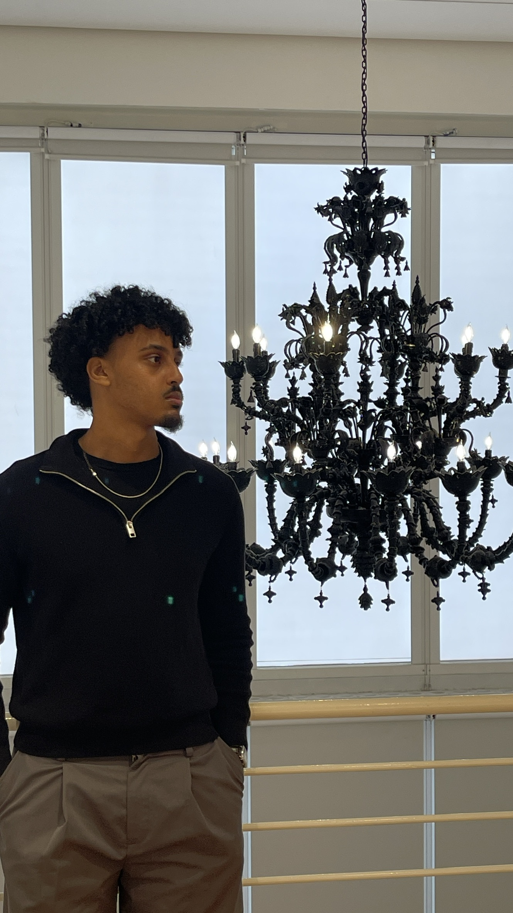
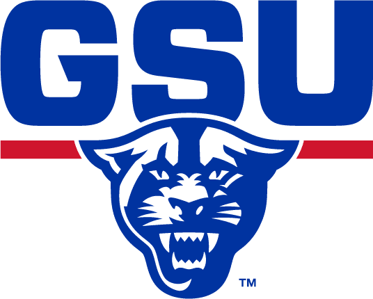
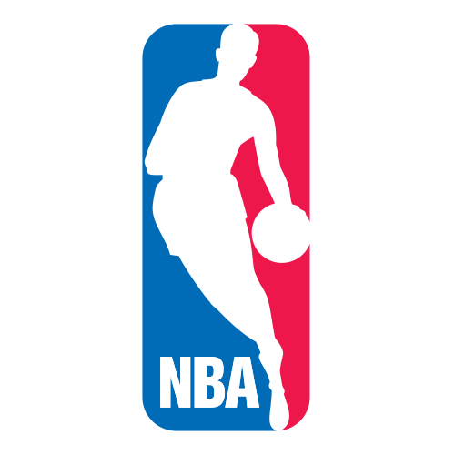
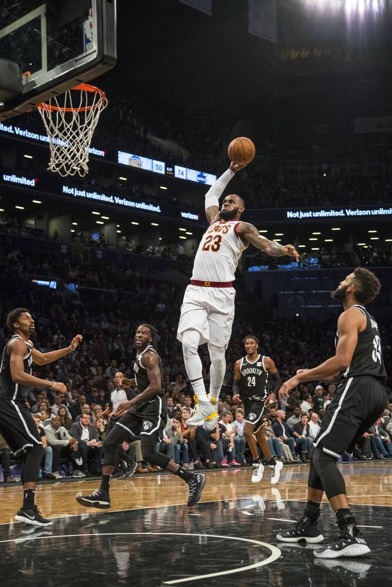

Computer Science Coursework
This semester I'm taking Design & Analysis of Algorithms, Web Programming, Cybersecurity, and Software Engineering.
Hamza Yassin
Jump to: Background | Skills & Schedule | Top 5 NBA Players

My name is Hamza Yassin I am a senior attending GSU and studying Computer Science. I am expected to graduate next spring. I love coding and learning about computer hardware and building software. I hope to make a positive impact on the world with my skills.
One thing about me is that I love basketball. I have been watching and playing basketball ever since I can remember. When I was younger, my dream was to be in the NBA. I also love video games — one of my favorite games ever is Elden Ring. I grew up playing games like NBA 2K and Call of Duty, and I still play them today from time to time.
My current goal, along with all my classwork, is to land an internship. I'm working toward that by building my resume, and working on impactful, intricate projects that truly display my skills. I'm also networking and building as many connections as I can, and making sure I attend as many events and career fairs as possible to pick up advice and recommendations.
“The only true wisdom is in knowing you know nothing.”
— Socrates

I'm a Computer Science senior at Georgia State University, on track to graduate next spring. Between coursework, projects, and the job search, I'm building the technical and professional foundation for a career in software engineering.
This semester I'm taking Design & Analysis of Algorithms, Web Programming, Cybersecurity, and Software Engineering.


I love the NBA, and LeBron James is my favorite player to watch.
| Day | Class 1 | Class 2 |
|---|---|---|
| Monday | Design & Analysis | Web Programming |
| Tuesday | Cybersecurity | Software Engineering |
| Wednesday | Design & Analysis | Web Programming |
| Thursday | Cybersecurity | Software Engineering |